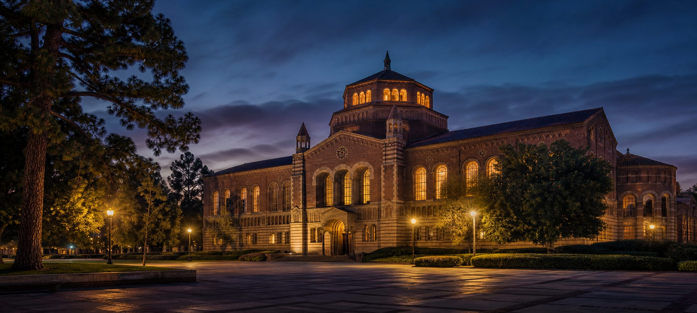
D01 → D60 · 2026.07.06 – 09.03
Nine Weeks
Sixty days, nine weeks. Morning is input; afternoon is output.
One stop per week, down the timeline. Morning input on the left, afternoon output on the right.
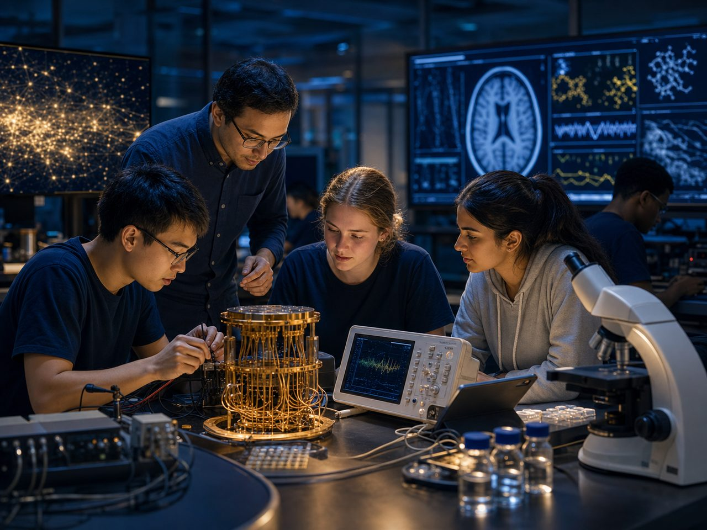
Quantum Science, AI & Data Analytics
Arrival and orientation, then everyday science into the quantum world: photons, electrons, and the language shared by AI and biology. With KS Huang, Mark Gyure (UCLA CQSE), William Yu (UCLA Anderson).
A shared-vocabulary concept map across electrons, photons, quantum and AI, closing with a three-minute teach-back.
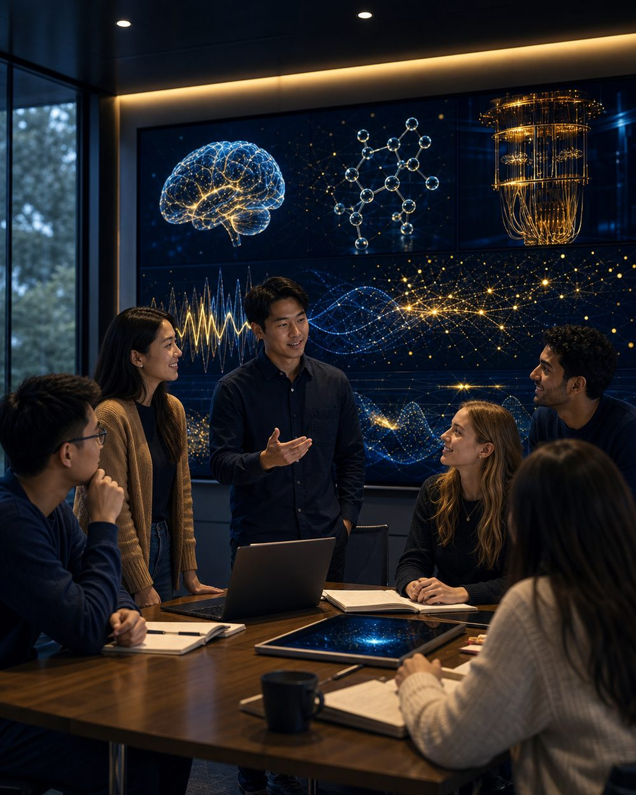
Field updates & photoslive during the program
Photos and notes from this week will be added live during summer 2026.
Biology, Bioscience & Health Data
Quantum science and technology for sensing, imaging, computing, communication, AI and biomedical applications, with terahertz electronics and photonics (Mona Jarrahi, UCLA).
A future computer-system design integrating electronics, photonics, quantum and AI architecture.
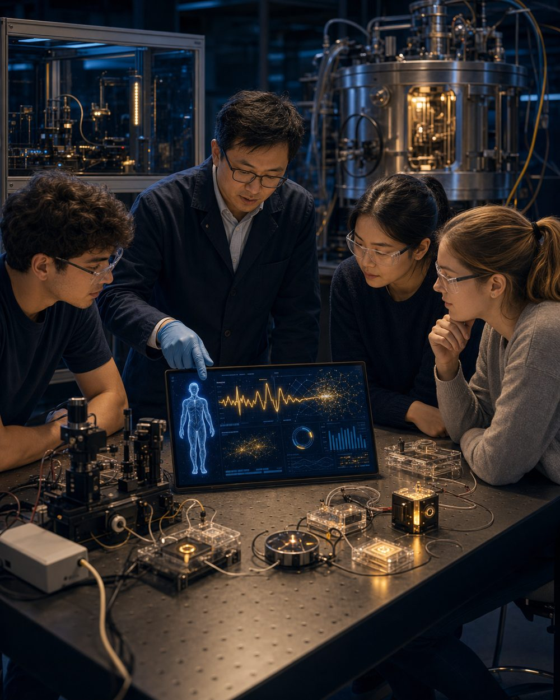
Field updates & photoslive during the program
Photos and notes from this week will be added live during summer 2026.
Neuroscience & Brain Research
Neuroscience and engineering; neurobehavioral genetics and neurodegenerative disease (C.Y. Daniel Lee); brain research and lab tours (Gina Poe, UCLA Brain Research Institute).
A healthcare-sensing case: select one disease or societal problem and design a sensing or AI solution.
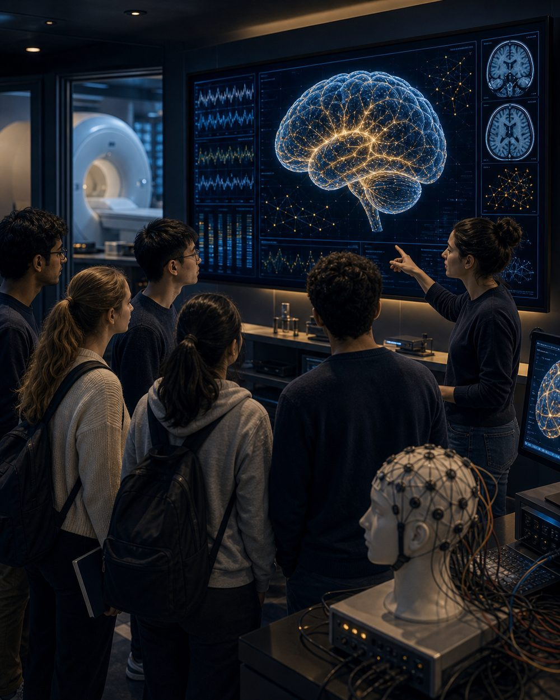
Field updates & photoslive during the program
Photos and notes from this week will be added live during summer 2026.
Quantum Science, Semiconductors & Materials
Quantum science and engineering with lab tours (Richard Ross); semiconductor technologies (Marko Sokolich); solar energy and materials science (Yang Yang).
A lab or technology case study on applications in quantum, semiconductors, materials, or neuroscience.
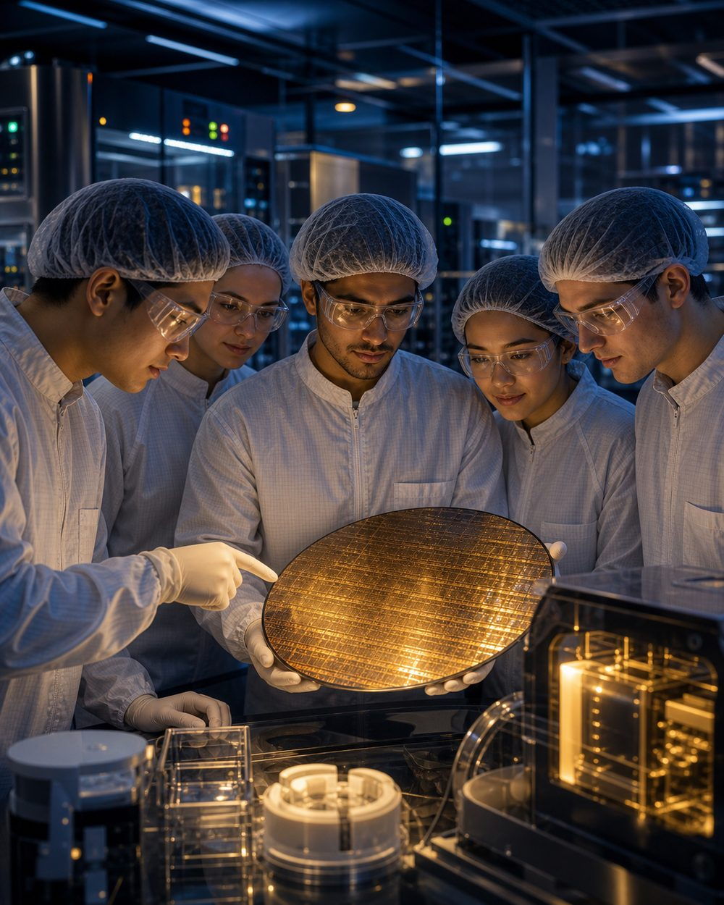
Field updates & photoslive during the program
Photos and notes from this week will be added live during summer 2026.
Medical Pharmacology, Nanotech & Biomarkers
A bridge workshop and vocabulary bootcamp; nanotech, liquid biopsy, biomarkers and digital twins (Hsian-Rong Tseng, UCLA / David Geffen School of Medicine); data science for health and security (Yuan Tian).
A biomarker or digital-twin mini-proposal: the problem, the data, the method, the risks.
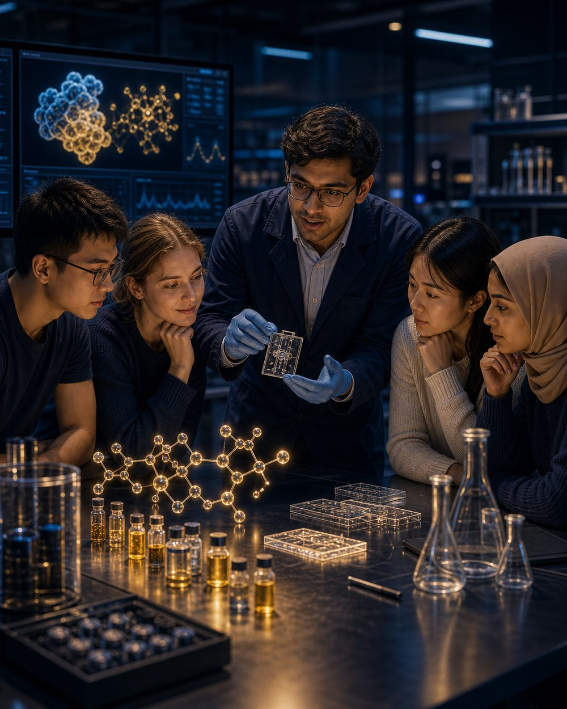
Field updates & photoslive during the program
Photos and notes from this week will be added live during summer 2026.
Digital Health & Innovation
Digital health and innovation (Bijan Najafi, UCLA / David Geffen School of Medicine); a data-visualization lab; quantum systems to date (Kang Wang); superconducting quantum computing (Alan Ho, QoLab); immunology and regulatory T-cells (Li-Fan Lu, UC San Diego).
A digital-health prototype: user journey, data flow, and ethics and privacy considerations.
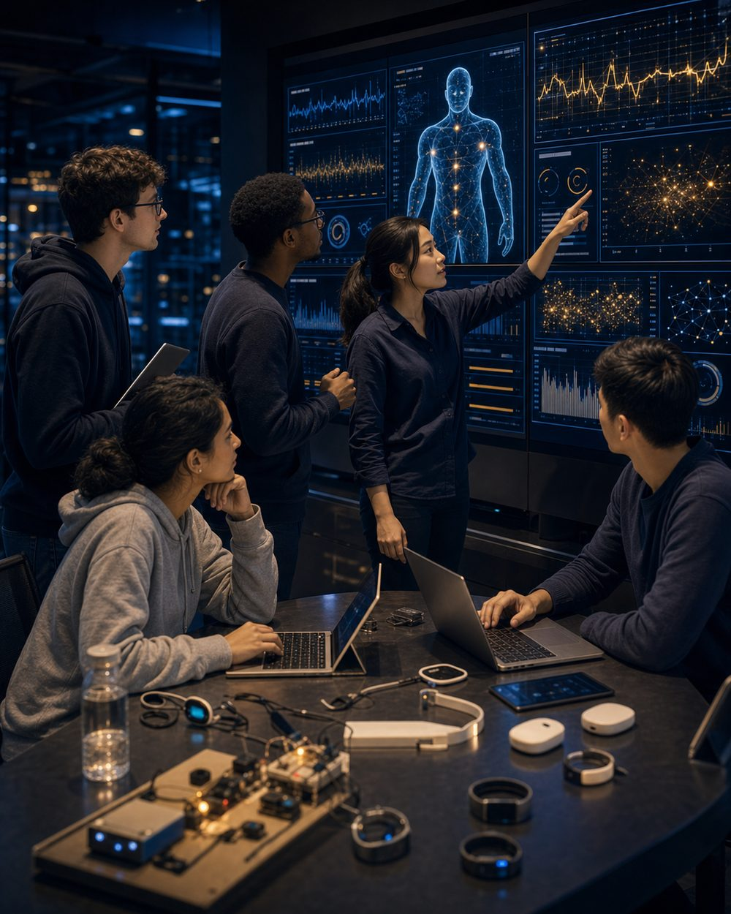
Field updates & photoslive during the program
Photos and notes from this week will be added live during summer 2026.
Integrative & Traditional Chinese Medicine
Chinese medicine, integrative medicine, herbal medicine and acupuncture (Hung-Rong Yen, China Medical University); integrative East-West medicine (Ka-Kit Hui, UCLA Center for East-West Medicine).
An integrative-medicine evidence map: how traditional and modern medicine can inform and validate one another.
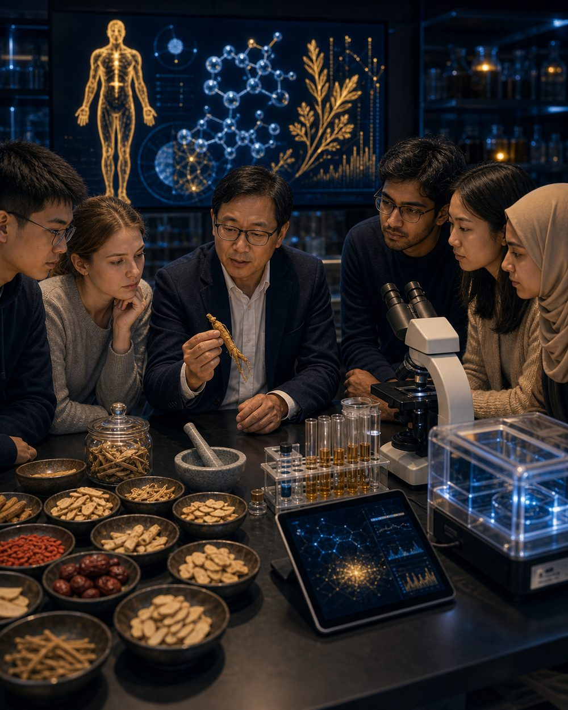
Field updates & photoslive during the program
Photos and notes from this week will be added live during summer 2026.
Quantum Science / Applied Quantum
Theoretical quantum neuromorphics (Robert Huang, Caltech); quantum platforms from hardware to algorithms; quantum information and applied quantum science.
A final-project draft: research question, technical pathway, expected impact, and limitations.
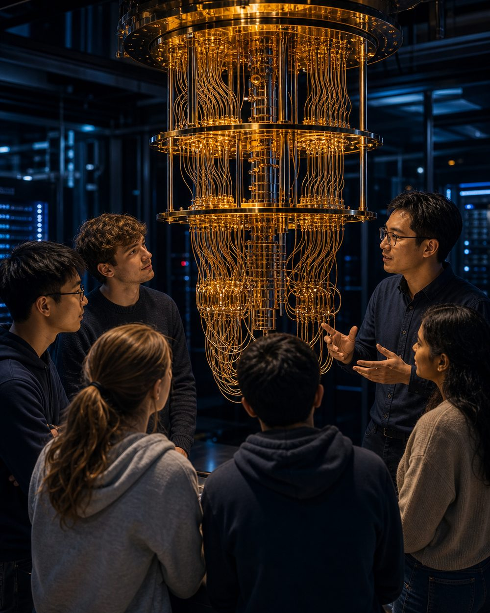
Field updates & photoslive during the program
Photos and notes from this week will be added live during summer 2026.
Final Integration, Report & Return
Final-project rehearsals and peer review: rubric scoring, time management, slide revision.
The final symposium: full presentation, individual reflection, portfolio, and thank-you notes. Then the return to Taiwan.
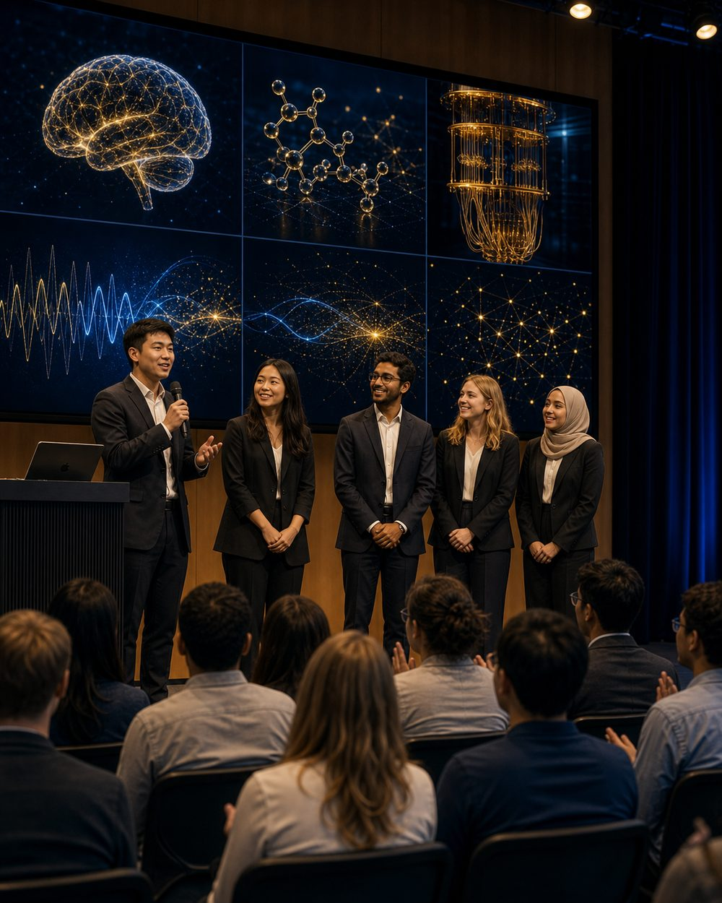
Field updates & photoslive during the program
Photos and notes from this week will be added live during summer 2026.